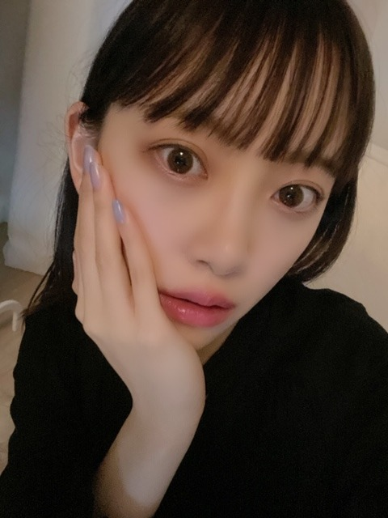
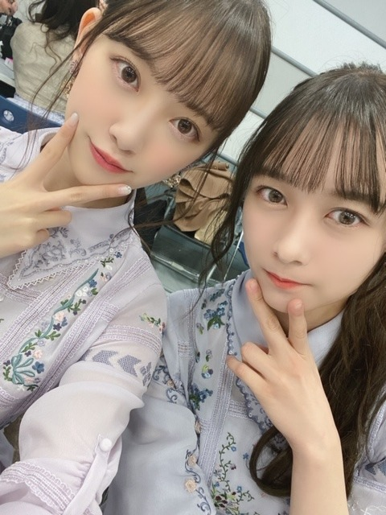

2020/0131Fri雲がもくもくしていました
最近、春らしい暖かい日がちらほらあって
もうすぐ春かぁなんて思いながら
街を歩いています
出会いや別れがあり、
花が咲いて花が枯れて、
また新しい一年が始まろうとしていますね
この間、欲しいものは何ですか？
と聞かれたときに
"永遠"ですと答えました
乃木坂にいてみんなで笑ってる
そんな幸せな時間が永遠だったらいいなと
思う瞬間がたくさんあります
でも形に残るもので永遠って中々無いですよね
だからこそ気持ちや記憶で永遠に続く何かを
残せたらいいなぁ
一瞬一瞬が
かけがえのないものなんですよね
さて
いろんな風邪が流行っているので
マスクや手洗いうがいをして気をつけましょう
毎日43°以上のお風呂に浸かることと
バランスの良い食事、睡眠が免疫力向上と
健康に繋がると思うので是非！
おうちではいつもメガネです
金子眼鏡さんで奮発して買いました
あ、あと
前髪をぱっつんにしたら
幼くなったとよく言われます
髪色も抜けて明るくなってきていたので
暗髪にしました！
黒だけど黒じゃない絶妙なアッシュ系です
透明感のある暗い色が最近は好き♩


みなさんいつも応援ありがとうございます
改めて、応援してくださる
優しいファンのみなさんが大好きです♩
では
2020/01/31 19:00
コメント(288)
堀さんの『インフルエンサー』のMVの衣装めっちゃ可愛いな
更新ありがとう 応援しとるよー^ ^
みおな
今日もお疲れ様です
今年の冬は暖かいですね
こちら長野も寒いは寒いけど、易しい寒さです（氷点下までいかないので）
昼間はポカポカしてて会議中にウトウトしてしまいました笑
俺も永遠にみおなが乃木坂いて欲しいと思います
極端だけど、俺やみおなだって、人はいつかは死んでしまうから、永遠なんて物は本当は無いのかもしれないけど、今こうしてみおなのファンでいられるのは嬉しいですよ
だから有限な今を精一杯生きましょう
今日で2月です
もうすぐバスラだね
コロナウィルスの影響でいろんなイベントが延期になってて、ライブも延期や中止にならないか不安だけど、楽しみにしてます
でも、みおなや他のメンバーが感染したら大変なのでその時はその時だと思ってます
体調には気をつけてください
今日も可愛い写真をありがとう！（爪もオシャレ）
ありがとうございました
今日もお疲れ様です
今年の冬は暖かいですね
こちら長野も寒いは寒いけど、易しい寒さです（氷点下までいかないので）
昼間はポカポカしてて会議中にウトウトしてしまいました笑
俺も永遠にみおなが乃木坂いて欲しいと思います
極端だけど、俺やみおなだって、人はいつかは死んでしまうから、永遠なんて物は本当は無いのかもしれないけど、今こうしてみおなのファンでいられるのは嬉しいですよ
だから有限な今を精一杯生きましょう
今日で2月です
もうすぐバスラだね
コロナウィルスの影響でいろんなイベントが延期になってて、ライブも延期や中止にならないか不安だけど、楽しみにしてます
でも、みおなや他のメンバーが感染したら大変なのでその時はその時だと思ってます
体調には気をつけてください
今日も可愛い写真をありがとう！（爪もオシャレ）
ありがとうございました
みおちゃんブログ更新ありがとう♪
俺もみおちゃん大好きだよー(｡･ω･｡)
これからもよろしくね( ´ ▽ ` )ﾉ
福岡のトゥモロー⊿
俺もみおちゃん大好きだよー(｡･ω･｡)
これからもよろしくね( ´ ▽ ` )ﾉ
福岡のトゥモロー⊿
お疲れ様です。 乃木坂2期生単独ライブが決まり、楽しみで仕方ありません‼️チケット販売はいつからでしょうか、、ゲットして絶対に行くぞ。ラブ ♥️❤️！
未央奈、おはよう
くっきりとした朝の光が
まるでテーブルクロスでも
引きはらうように闇を消し去った
灰青色におぼめく
朝の最初の光
部屋の窓を開けて、
瑠璃色の海を見ながら、
ダージリンティーを啜る
若草山がくっきりと浮き上がって見え
薄く色づいた樹々が
すっかり眠りから覚め
次第に陽光があたたかくなってくる
一日の始まりだ
さて、今日はいい事がありますように...
あっ、ごめん
全て妄想です
今日も一日頑張りましょう☹
くっきりとした朝の光が
まるでテーブルクロスでも
引きはらうように闇を消し去った
灰青色におぼめく
朝の最初の光
部屋の窓を開けて、
瑠璃色の海を見ながら、
ダージリンティーを啜る
若草山がくっきりと浮き上がって見え
薄く色づいた樹々が
すっかり眠りから覚め
次第に陽光があたたかくなってくる
一日の始まりだ
さて、今日はいい事がありますように...
あっ、ごめん
全て妄想です
今日も一日頑張りましょう☹
こんにちは！
暖かかったり寒かったり、、
でも確実に春に向かってるんやね。。。
時間は一瞬でも未央奈と会って話した記憶は、永遠かは分からないけど少なくても生きてる内は忘れないと思う。
風邪予防は良きだけど43度熱くない？？
でも昔より身体強くなった？
メガネ未央奈の写真も見てみたいな♪
気が向いたら是非！！
暗め髪だと肌の白さがより際立つね！
お綺麗です♪♪
暖かかったり寒かったり、、
でも確実に春に向かってるんやね。。。
時間は一瞬でも未央奈と会って話した記憶は、永遠かは分からないけど少なくても生きてる内は忘れないと思う。
風邪予防は良きだけど43度熱くない？？
でも昔より身体強くなった？
メガネ未央奈の写真も見てみたいな♪
気が向いたら是非！！
暗め髪だと肌の白さがより際立つね！
お綺麗です♪♪
今回もどれもこれもイイ表情・・・
すずほりコンビのショットも宝物・・・
眼鏡姿の色んな未央奈も見てみたいな、
すずほりコンビのショットも宝物・・・
眼鏡姿の色んな未央奈も見てみたいな、
いつも愛をありがとうね(^ ^)！
未央奈ちゃん
こんばんは
いつも素敵な笑顔を
届けてくれてありがとう
僕は都立日比谷高校合格を
目指している受験生で
2月21日に学力試験があります
今、追い込みをしていて
何とか合格出来るよう
頑張っています
もし、よければ
エールをください！
未央奈ちゃんのエールが
あれば絶対合格出来る
気がします
頑張るぞー！
こんばんは
いつも素敵な笑顔を
届けてくれてありがとう
僕は都立日比谷高校合格を
目指している受験生で
2月21日に学力試験があります
今、追い込みをしていて
何とか合格出来るよう
頑張っています
もし、よければ
エールをください！
未央奈ちゃんのエールが
あれば絶対合格出来る
気がします
頑張るぞー！
ブログ更新ありがとう！
こちらこそどんどんきれいになっていく未央奈ちゃんが大好きです！
いつも頑張ろうと思える元気をもらっています！ありがとうございます！
これからも応援します！
こちらこそどんどんきれいになっていく未央奈ちゃんが大好きです！
いつも頑張ろうと思える元気をもらっています！ありがとうございます！
これからも応援します！
こんばんは～
ブログ更新ありがとうございます✨
ほんとに永遠にみんなでわいわいと出来たら幸せですよね
そんな時間が長く続く事を願います❗
前髪ぱっつんでも可愛くて綺麗ですよ☺️
未央奈ちゃんも、マスク して風邪とかにならないように気を付けてくださいね。
これからも体調崩さず頑張ってください❗
ブログ更新ありがとうございます✨
ほんとに永遠にみんなでわいわいと出来たら幸せですよね
そんな時間が長く続く事を願います❗
前髪ぱっつんでも可愛くて綺麗ですよ☺️
未央奈ちゃんも、マスク して風邪とかにならないように気を付けてくださいね。
これからも体調崩さず頑張ってください❗
こんばんは！
欲しいものは何ですか？の問いに「永遠」って答えるのカッコいいね
永遠なんて無いから日々が輝くと思うし、儚いものだと思う
人生大切に生きて行きたいね
てか、43℃以上のお風呂って熱くない？
未央奈は熱さに強いね(笑)
そういえば、バスラの席を確認してみたらアリーナだったよ～最高
またねっ！
欲しいものは何ですか？の問いに「永遠」って答えるのカッコいいね
永遠なんて無いから日々が輝くと思うし、儚いものだと思う
人生大切に生きて行きたいね
てか、43℃以上のお風呂って熱くない？
未央奈は熱さに強いね(笑)
そういえば、バスラの席を確認してみたらアリーナだったよ～最高
またねっ！
くれぐれも風邪引かないでね
超多忙だから免疫落ちやすいと思うけど。
最近暖かい日は友達と遊んでます。
まぁそれはそれで楽しいんだけど早く握手会行きないなー
超多忙だから免疫落ちやすいと思うけど。
最近暖かい日は友達と遊んでます。
まぁそれはそれで楽しいんだけど早く握手会行きないなー
未央奈ちゃん、らじらー！おつかれさまっ！
みなみちゃんお休みだったから残念だったけど、めちゃくちゃおもしろかったよ！
アドリブもすらすらセリフが出てさすがだなぁと思った！
バースデーライブ、2期生ライブと続いていくね！
体調に気をつけて乗りきってね！
応援してます！
みなみちゃんお休みだったから残念だったけど、めちゃくちゃおもしろかったよ！
アドリブもすらすらセリフが出てさすがだなぁと思った！
バースデーライブ、2期生ライブと続いていくね！
体調に気をつけて乗りきってね！
応援してます！
らじらーお疲れ様でした～(^-^ゞ
楽しかったよ(^∇^)
楽しかったよ(^∇^)
みおなちゃん更新ありがとう╰(*´︶`*)╯♡
暖かい日がたまにありますね(*´꒳`*)
春が季節の中で1番好きなので待ち遠しいです(๑>◡<๑)
乃木坂のみんなといる一瞬一瞬が大切な時間ですね
いろんな風邪が流行ってて怖いね(ﾟoﾟ;;
体調に気を付けてね（╹◡╹）♡
前髪ぱっつんも可愛いです（╹◡╹）♡
2月に入ったねー
今月も頑張って行きましょー･:*+.\(( °ω° ))/.:+
暖かい日がたまにありますね(*´꒳`*)
春が季節の中で1番好きなので待ち遠しいです(๑>◡<๑)
乃木坂のみんなといる一瞬一瞬が大切な時間ですね
いろんな風邪が流行ってて怖いね(ﾟoﾟ;;
体調に気を付けてね（╹◡╹）♡
前髪ぱっつんも可愛いです（╹◡╹）♡
2月に入ったねー
今月も頑張って行きましょー･:*+.\(( °ω° ))/.:+
こんばんは、堀さん！
今頃になりましたけど、2期生単独ライブの開催決定、おめでとうございます！
2020年、令和2年、2月22日にデビューした乃木坂46の2期生の単独ライブということでね、2がいっぱいあって、なんといいましょうか、そうゆう風に考えても記憶に残りそうな気がしますね
ところで、先程のらじらー！サンデー聴きました！
そうですね、期待を遥かに越えて楽しかったです(笑)
楽しいときはおもいっきり笑う堀さん、それだけでも十分魅力的なのですけど、今回もまたどれだけ堀さんの魅力に魅了され続けたことでしょう
あっさり？クール？合理的？言いたいことははっきり言う？、そんな堀さんに魅了されて今こうして応援しているのだと再認識した回でしたね
とくに22時以降のコーナーでは、なんといいますか、天才なんじゃないかと思いましたね(笑)
本当にそれぐらい楽しかった
またなにかあればコメントします！
健康にはお気をつけてお過ごしください！
ケガにも
今頃になりましたけど、2期生単独ライブの開催決定、おめでとうございます！
2020年、令和2年、2月22日にデビューした乃木坂46の2期生の単独ライブということでね、2がいっぱいあって、なんといいましょうか、そうゆう風に考えても記憶に残りそうな気がしますね
ところで、先程のらじらー！サンデー聴きました！
そうですね、期待を遥かに越えて楽しかったです(笑)
楽しいときはおもいっきり笑う堀さん、それだけでも十分魅力的なのですけど、今回もまたどれだけ堀さんの魅力に魅了され続けたことでしょう
あっさり？クール？合理的？言いたいことははっきり言う？、そんな堀さんに魅了されて今こうして応援しているのだと再認識した回でしたね
とくに22時以降のコーナーでは、なんといいますか、天才なんじゃないかと思いましたね(笑)
本当にそれぐらい楽しかった
またなにかあればコメントします！
健康にはお気をつけてお過ごしください！
ケガにも
夜分おそく。。
今、SHOWROOM配信者をアマチュア枠からだけどやり始めた。
生配信をお仕事だと思って精いっぱい頑張る。
SHOWROOMを機にいつかチャンスがあったら会いたい。
みおなの方からもプッシュしてくれたら助かるよ。
今、SHOWROOM配信者をアマチュア枠からだけどやり始めた。
生配信をお仕事だと思って精いっぱい頑張る。
SHOWROOMを機にいつかチャンスがあったら会いたい。
みおなの方からもプッシュしてくれたら助かるよ。
堀ちゃんこんばんは！
欲しいものは？→永遠
今を大切にしている堀ちゃんだからこそ生まれる答えですね( ´ ー ` )
僕の好きな曲で
「旅立つ日が来るならば せめてこの時間よ
止まれとは言わないよ ゆっくり進め」
というフレーズがあります
絶対に終わりは来てしまうけど、時間は止められない、だったら好きな人たちと一緒にいる時間は出来るだけゆっくり進んでほしい、っていう切ない願いを表しているのが凄く心にしっくりきます(^^)
でも、好きな人たちと一緒にいる時間ってあっという間なんですよね、なかなか上手くいかないもんです( ´ ▽ ` )笑
きっと堀ちゃんは同じ時間を過ごしている人たちに対してなので、もっと強い大きい気持ちを持っていると思いますが、僕も堀ちゃんや乃木坂を応援している時間が楽しくて、永遠に続いてくれたらなぁと思うときがあります( ´ ー ` )
時間は永遠じゃなくても気持ちや記憶は永遠にできる、その通りですね、堀ちゃんから生まれるこういう言葉がほんとに大好きです(o^^o)
一瞬一瞬を、大事にしていきます、堀ちゃんのこと、大切に応援していきます(*´ー｀*)
そして乃木中見ました！
25thシングル選抜おめでとうございます！！(o^^o)
乃木坂の歴史と未来をファンに見せてくれるシーンが想像できて、胸が熱くなりました(*´ー｀*)
発表された列は3つですが、その後ろにも周りにもメンバー全員の想いが見える、そんな気がします。
1つのシングルを、白石さんを送り出す形として特別なフォーメーションを組めるのが、乃木坂46の素敵なところで、僕の大好きなところです( ´ ー ` )
堀ちゃんにとって、白石さんにとって、乃木坂みんなにとって、かけがえのない作品に、時間に、想い出になりますように。
またいろんなお話聞かせてください(o^^o)
では！またコメントさせてくださいー！
欲しいものは？→永遠
今を大切にしている堀ちゃんだからこそ生まれる答えですね( ´ ー ` )
僕の好きな曲で
「旅立つ日が来るならば せめてこの時間よ
止まれとは言わないよ ゆっくり進め」
というフレーズがあります
絶対に終わりは来てしまうけど、時間は止められない、だったら好きな人たちと一緒にいる時間は出来るだけゆっくり進んでほしい、っていう切ない願いを表しているのが凄く心にしっくりきます(^^)
でも、好きな人たちと一緒にいる時間ってあっという間なんですよね、なかなか上手くいかないもんです( ´ ▽ ` )笑
きっと堀ちゃんは同じ時間を過ごしている人たちに対してなので、もっと強い大きい気持ちを持っていると思いますが、僕も堀ちゃんや乃木坂を応援している時間が楽しくて、永遠に続いてくれたらなぁと思うときがあります( ´ ー ` )
時間は永遠じゃなくても気持ちや記憶は永遠にできる、その通りですね、堀ちゃんから生まれるこういう言葉がほんとに大好きです(o^^o)
一瞬一瞬を、大事にしていきます、堀ちゃんのこと、大切に応援していきます(*´ー｀*)
そして乃木中見ました！
25thシングル選抜おめでとうございます！！(o^^o)
乃木坂の歴史と未来をファンに見せてくれるシーンが想像できて、胸が熱くなりました(*´ー｀*)
発表された列は3つですが、その後ろにも周りにもメンバー全員の想いが見える、そんな気がします。
1つのシングルを、白石さんを送り出す形として特別なフォーメーションを組めるのが、乃木坂46の素敵なところで、僕の大好きなところです( ´ ー ` )
堀ちゃんにとって、白石さんにとって、乃木坂みんなにとって、かけがえのない作品に、時間に、想い出になりますように。
またいろんなお話聞かせてください(o^^o)
では！またコメントさせてくださいー！
未央奈ちゃん、おはようございます。
昨日のモバメ物凄くカワイイです(いつもカワイイけどね)、本当にゆでたまごみたいに、つるつるでぷよぷよでしっとりが伝わってきたよ‼
白石さんの卒業曲、後ろから確りと目に焼き付けてくださいね、それといつも以上に楽しんでくださいね。
２期生ライブには絶対に行きたい、必ず当てて未央奈ちゃんとアイコンタクトします‼
乃木坂46と頑張ってるcuteでsmartな未央奈ちゃんを応援しています。
昨日のモバメ物凄くカワイイです(いつもカワイイけどね)、本当にゆでたまごみたいに、つるつるでぷよぷよでしっとりが伝わってきたよ‼
白石さんの卒業曲、後ろから確りと目に焼き付けてくださいね、それといつも以上に楽しんでくださいね。
２期生ライブには絶対に行きたい、必ず当てて未央奈ちゃんとアイコンタクトします‼
乃木坂46と頑張ってるcuteでsmartな未央奈ちゃんを応援しています。
みおないつも可愛い！
好き~
好き~
昨日はらじらーお疲れ様です！
楽しかったです！
未央奈ちゃんも健康に気をつけてね。
楽しかったです！
未央奈ちゃんも健康に気をつけてね。
ぱっつん未央奈好き( ・∋・)
いつもブログ更新楽しみにしてます！ありがとう！
冒頭のコメントしみじみ噛み締めました笑
出会いも出来事も一瞬一瞬を大切にしていきたいですね。
そして、変化がある事を受け入れて変化があるからきっと楽しいんでしょうね。人の成長や、季節の移り変わり、、、。
バースデーライブ、、落ちちゃった
二期生ライブこそ当てて、岐阜から参加したいなー
いつも岐阜から声援と感謝を。
冒頭のコメントしみじみ噛み締めました笑
出会いも出来事も一瞬一瞬を大切にしていきたいですね。
そして、変化がある事を受け入れて変化があるからきっと楽しいんでしょうね。人の成長や、季節の移り変わり、、、。
バースデーライブ、、落ちちゃった
二期生ライブこそ当てて、岐阜から参加したいなー
いつも岐阜から声援と感謝を。
堀さんのブログは心がありますよね、堀さんは乃木坂46に欠かせない存在ですし、乃木坂46の誇りです。堀さんなら、きっと、魔法も使えるはず、魔法使い未央奈で、たくさんの奇跡を起こせますよ、やっぱ二期生が最高です。永遠です。
昨日もまた、愛をありがとうね(^ ^)！
みおなちゃん、こんにちは。
乃木坂工事中、僕は見たよ。録画して見ました。２５thシングルの選抜発表がありましたね。みおなちゃん、２５thシングル選抜メンバー入りおめでとうございます。
２５thシングル、僕は全タイプ絶対買うね。発売日がめっちゃ楽しみです。
らじらー、僕は聴いたよ。めっちゃ楽しくて、おもしろかったです。
みおなちゃん、体調に気をつけて仕事頑張ってね。
またコメントするね。
乃木坂工事中、僕は見たよ。録画して見ました。２５thシングルの選抜発表がありましたね。みおなちゃん、２５thシングル選抜メンバー入りおめでとうございます。
２５thシングル、僕は全タイプ絶対買うね。発売日がめっちゃ楽しみです。
らじらー、僕は聴いたよ。めっちゃ楽しくて、おもしろかったです。
みおなちゃん、体調に気をつけて仕事頑張ってね。
またコメントするね。
髪めっちゃ似合ってる!!!!
俺も永遠に乃木坂46応援したい!!!
俺も永遠に乃木坂46応援したい!!!
未央奈ちゃんこんばんは‼ありがとうございます‼頑張ります‼今日から頑張ります‼お仕事頑張って下さい！ありがとうございます‼
乃木坂工事中見ました。
未央奈ちゃんと日奈子ちゃん選抜メンバーおめでとう
白石麻衣さんの最後の曲ですね。
白石さんとのいい思い出にしてください。
体調に気をつけて頑張ってね。
未央奈ちゃんと日奈子ちゃん選抜メンバーおめでとう
白石麻衣さんの最後の曲ですね。
白石さんとのいい思い出にしてください。
体調に気をつけて頑張ってね。
堀ちゃん、選抜おめでとう(⌒‐⌒)
ちょっと複雑な気持ちもありますが、以前に橋本ななみんのプログのコメントを思い出して！(￣-￣)ゞ頑張ってください。
いつどんな時でも堀ちゃんを始め二期生全員を応援しています
朗報です堀ちゃんの好きなタイでコロナウイルスの患者さんが回復したとのことです。それではまた
ちょっと複雑な気持ちもありますが、以前に橋本ななみんのプログのコメントを思い出して！(￣-￣)ゞ頑張ってください。
いつどんな時でも堀ちゃんを始め二期生全員を応援しています
朗報です
体調に気をつけてね！
堀ちゃんブログありがとう！
髪型とてもいいですね
髪型とてもいいですね
おはよう！
25枚目の選抜選ばれてたね。おめでとう！
共にまいやんを見送れますね
今回、二期、三期、四期の皆は2列目、3列目からだけども後ろから背中を見て無事に送り出そうね！
25枚目の選抜選ばれてたね。おめでとう！
共にまいやんを見送れますね
今回、二期、三期、四期の皆は2列目、3列目からだけども後ろから背中を見て無事に送り出そうね！
みおち～、うきゃっ♪(^ ^)
大好きな未央奈ちゃんお疲れ様です。先日のらじらーサンデー誰が出演するか知らなくて聞いたら、未央奈ちゃんとさやかちゃんだったので凄くびっくりしたし、凄く嬉しかったです。ただ残念だったのは、私含めファン待望のらじらー初のみなみおなの共演がみなみちゃんの体調不良の為、実現持ち越しになったのが凄く寂しいです。次回は実現するといいね。さやかちゃんが未央奈ちゃんのことが大好きで食事に誘ってくれたの私も凄く嬉しいです。今度はお互いの地元に一緒に遊びに行けるといいね。(さやかちゃんだけではなく、他の後輩達共行けるといいね。結構、未央奈ちゃんは後輩達に慕われていると、思います。)そろそろ乃木坂工事中恒例のバレンタイン企画の季節ですね。4期生の憧れている先輩に、きっとさやかちゃんは、未央奈ちゃんを指名してくれると私は思います。25thシングルの選抜発表されましたね。今回は未央奈ちゃんは3列目ですが、偉大な先輩のまいやん、さゆにゃん、アンダーでは、同期の琴子ちゃんがラストシングルなので、精一杯背中を焼き付けて、今後未央奈ちゃんが乃木坂４６を引っ張っててね!未央奈ちゃんなら、絶対できるよ!未央奈ちゃんは、新旧のキャプテンからの信頼もアツいからね。未央奈ちゃんFight!大好きやおー!明日のレコメンも楽しみ!


もうすぐ節分。立春を迎えれば暦の上では春ということになりますが、春は名のみの風の寒さやという歌もあるように、まだまだ厳しい寒さの日が続きます。体調管理しっかりと、ね。
楽しい時間、美しい日々は永遠であれと誰しも願うもの。でもそれはうたかたの夢。それだからこそかけがえのない毎日を大切にすごしたいものです。
悪い風邪が流行りつつありそうで心配です。健康第一。
ではまたコメント寄せます。
さらばだ、また会おう！（気球に乗って去りぬ〜）